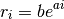
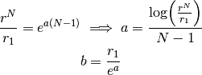

There are three different kinds of grids available in APE.
log1

The determination of and given and and the number of points is as follows:

Note that is defined using in particular.
 given and
and the number of points
given and
and the number of points  is as follows: is defined using in particular.
is as follows: is defined using in particular.